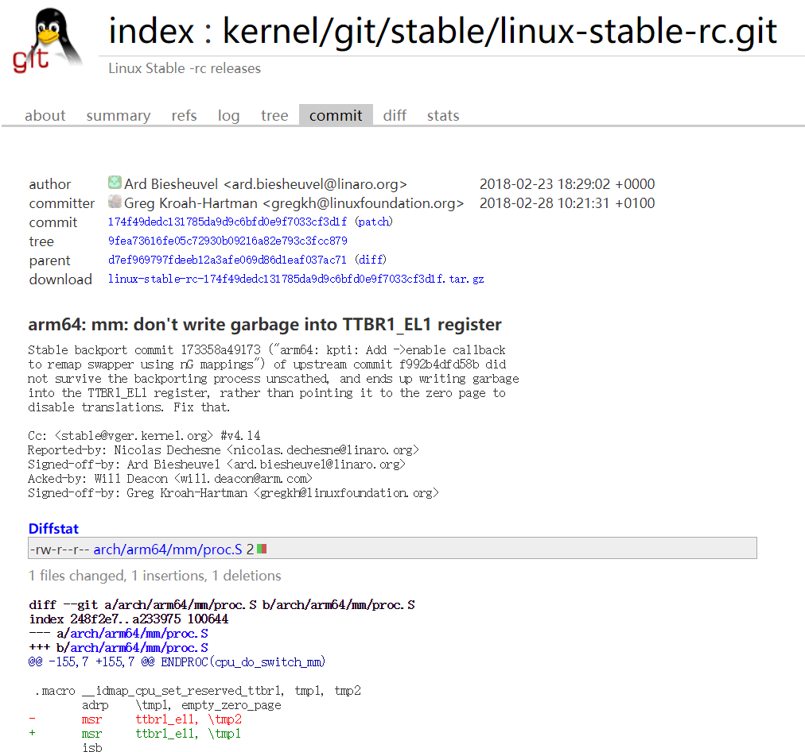

内核打补丁
选取补丁
—：源文件
+++：目标文件
@@ -x,y +m,n @@：
源文件修改范围从第x行开始，共y行
修改之后对应的目标文件从m行开始，共n行
缩进：表示该部分进行修改
+ ：增加一行
-：减少一行
无符号：表示引用这一行，不进行增加或减少
选取2018.2.28日commit

根据补丁修改
修改后保存，并重新编译内核
创建显示系统进程信息的proc模块
- 首先可以先看一下系统中proc目录下是否有tasklist这个文件夹
- 运行make进行编译
- 内核模块添加 $sudo insmod tasklist.ko
- 添加内核模块后读取并信息tasklist内核信息： $ cat /proc/tasklist
tasklist代码如下：
1 | //------------------------------------------------------------------- |
显示结果如下：
传入模块参数，实现隐藏进程
代码如下
1
2
3
4
5
6
7
8
9
10
11
12
13
14
15
16
17
18
19
20
21
22
23
24
25
26
27
28
29
30
31
32
33
34
35
36
37
38
39
40
41
42
43
44
45
46
47
48
49
50
51
52
53
54
55
56
57
58
59
60
61
62
63
64
65
66
67
68
69
70
71
72
73
74
75
76
77
78
79
80
81
82
83
84
85
86
87
88
89
90
91
92
93
94
95
96
97
98
99
100
101
102
103
104
105
106
107
108
109
110//-------------------------------------------------------------------
// tasklist.c： 本内核文件创建一个proc伪文件，'/proc/tasklist'
// 通过如下命令可以显示系统中所有进程的部分信息
// 注意：Makefile文件必须正确放置在当前目录下。
// 编译命令： make
// 内核模块添加：$sudo insmod tasklist.ko
// 添加内核模块后读取并信息tasklist内核信息： $ cat /proc/tasklist
// 内核模块删除：$sudo rmmod tasklist
// NOTE: Written and tested with Linux kernel version 4.15.6
// strace函数可用于追踪系统调用,命令格式如下所示：
// $ strace cat /proc/tasklist
//-------------------------------------------------------------------
char modname[] = "tasklist";
struct task_struct *task;
int taskcounts=0; // 'global' so value will be retained
static char *hide_task_name;
module_param(hide_task_name, charp, 0);
static void * my_seq_start(struct seq_file *m, loff_t *pos)
{
///printk(KERN_INFO"Invoke start\n"); //可以输出调试信息
if ( *pos == 0 ) // 表示遍历开始
{
task = &init_task; //遍历开始的记录地址
return &task; //返回一个非零值表示开始遍历
}
else //遍历过程中
{
if (task == &init_task ) //重新回到初始地址，退出
return NULL;
return (void*)pos ;//否则返回一个非零值
}
}
static int my_seq_show(struct seq_file *m, void *v)
{//获取进程的相关信息
//printk(KERN_INFO"Invoke show\n");
//输出进程序号
seq_printf( m, "#%-3d\t %d\t %ld\t %s",taskcounts++, task->pid,task->state,task->comm );
//输出进程pid?
//输出进程state?
//输出进程名称(comm)?
seq_puts( m, "\n" );
return 0;
}
static void * my_seq_next(struct seq_file *m, void *v, loff_t *pos)
{
//printk(KERN_INFO"Invoke next\n");
task=next_task(task);
if (!(strcmp(task->comm ,hide_task_name)))
task=next_task(task);
(*pos)++;
//task指向下一个进程?
return NULL;
}
static void my_seq_stop(struct seq_file *m, void *v)
{
//printk(KERN_INFO"Invoke stop\n");
// do nothing
}
static struct seq_operations my_seq_fops = {//序列文件记录操作函数集合
.start = my_seq_start,
.next = my_seq_next,
.stop = my_seq_stop,
.show = my_seq_show
};
static int my_open(struct inode *inode, struct file *file)
{
return seq_open(file, &my_seq_fops); //打开序列文件并关联my_seq_fops
}
static const struct file_operations my_proc =
{ //proc文件操作函数集合
.owner = THIS_MODULE,
.open = my_open,
.read = seq_read,
.llseek = seq_lseek,
.release = seq_release
};
int __init my_init( void )
{
struct proc_dir_entry* my_proc_entry;
printk( "<1>\nInstalling \'%s\' module\n", modname );
my_proc_entry = proc_create(modname, 0x644, NULL, &my_proc);//生成proc文件
if (NULL == my_proc_entry)
{
return -ENOMEM;
}
return 0; //SUCCESS
}
void __exit my_exit( void )
{
remove_proc_entry( modname, NULL );//删除proc文件
printk( "<1>Removing \'%s\' module\n", modname );
}
module_init(my_init);
module_exit(my_exit);
MODULE_LICENSE("GPL");实现结果